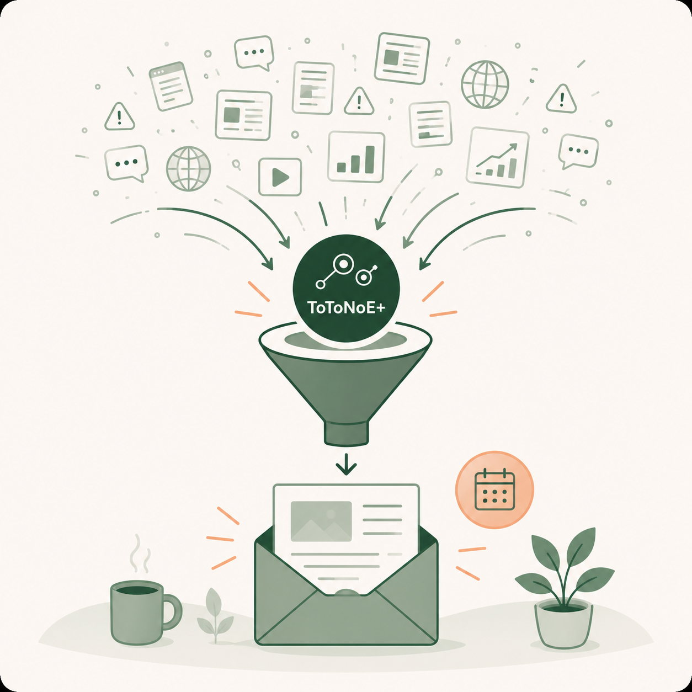

重要な変化だけを選ぶ
専門職の仕事に関係するAI・業務改善・情報管理の変化を絞って届けます。
MESSAGE
PROBLEM
見るべき情報が増えるほど、判断の負荷も増えていきます。ToToNoE Weeklyは、情報収集そのものを小さく整えます。

WHAT YOU GET
専門職の仕事に関係するAI・業務改善・情報管理の変化を絞って届けます。
「何がすごいか」だけではなく、「自分たちの現場に関係するか」を言語化します。
個人情報、著作権、組織内利用、共有範囲など、現場で止まりやすい論点も扱います。
読むだけで終わらず、小さく試せる行動や問いに落とし込みます。
USAGE SCENE
1週間の変化を短く確認し、来週の仕事に引き寄せて考える。
忙しい日でも、要点だけを読みながら最新情報の輪郭をつかむ。
法人・チームで同じ情報に触れ、会議や研修のきっかけにする。
SAMPLE
毎週の配信は、短く読める見出しと、現場で使うための整理をセットにして届けます。
2026.09 / SAMPLE
PLAN
月額 980円（税込）
個人で毎週の情報整理を受け取りたい方へ。最新情報を追う負担を減らし、仕事に使える視点を積み重ねます。
法人が人数枠を契約し、利用メンバー一人ひとりがメールアドレスを登録する方式です。全員登録ではなく、必要なメンバーから始められます。
| プラン | 利用人数 | 月額 |
|---|---|---|
| Team 10 | 10名まで | 5,000円（税込） |
| Team 20 | 20名まで | 10,000円（税込） |
| Team 50 | 50名まで | 15,000円（税込） |
| Team 100 | 100名まで | 25,000円（税込） |
| Enterprise | 101名〜 | 個別相談 |
現時点の料金案です。表示価格は税込です。契約人数の範囲内で、利用したいメンバーだけ登録できます。
法人で導入するTEAM USE
勤務先メールアドレス、または本人が受信を希望するメールアドレスを登録できます。法人担当者が、個人メールアドレス一覧をToToNoE+へ提出する仕様ではありません。
法人限定
法人プランの登録メンバーは、1人につき週1件まで優先テーマリクエストを送ることができます。
KNOWLEDGE LOOP
FAQ
個人は1名利用。法人は人数枠を契約し、所属メンバーがそれぞれ直接配信を受け取れます。
勤務先メール、または本人が受信を希望するメールアドレスを登録できます。
ありません。契約人数の範囲内で、利用したいメンバーだけ登録できます。
いいえ。個別回答サービスではありません。コンテンツ制作テーマとして優先的に検討します。
個人・法人を特定できない形に整理した上で、学習コンテンツ等として活用する場合があります。